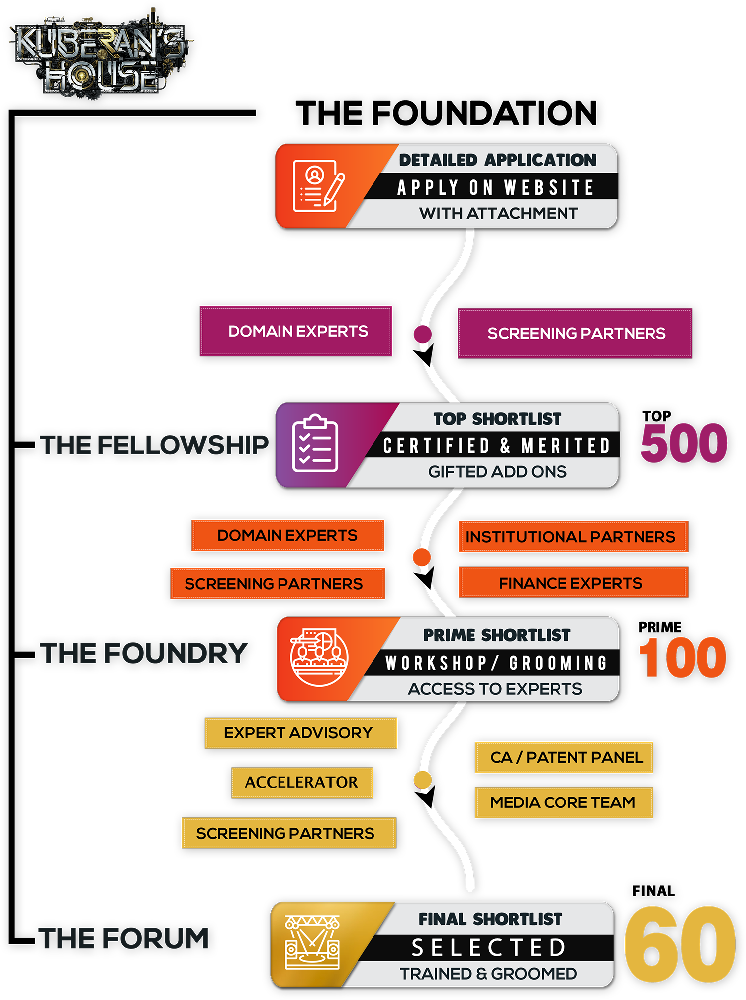

The core alignment of The Kuberan’s House Foundation is to Source, Screen, Streamline and Showcase the best startup ideas in india to the elite panel of the Kuberas. The pivot of the foundation being the detailed website and an exhaustive application forms process for ideators and entrepreneurs to be submitted along with a pitch deck.
The Foundation is constituted by a Strong, Passionate and well experienced multi faceted core team each with expertise on various domains. With strategic partnerships and aided by the best professionals in Media, P.R, Digital Marketing, Advertising and the very best of advisors from the best technical institutes and startup forums across India, the Foundation is the fulcrum of all operations enabling and amplifying maximum reach in inviting applications from innovative Entrepreneurs & Ideators.
9X Ventures LLP an integral part of The Kuberan’s House and is an in house professional start-up advisory organization which provides training, mentoring, defining and evaluating business model, network support, incubation and acceleration services. The screening of every applications is done in the most scientific and professional manner by 9XV, with their team of Industry Experts, Business valuators, Chartered Accountants and aided by the institutional and domain expert partners of Kuberan’s House.
All applications received in the KUBERAN’S HOUSE go through a three stage filtering process which includes exhaustive checks on Background, Tech specs, business module, originality and the potential feasibility of the proposed business idea.
The Top 500 applications which pass through the stringent parameters set by The Foundation are empaneled in the Kuberan's’ House ‘Hall of Fame’ start ups every season and each of them are handed out The ‘Kuberan’s Fellowship’ certificate as a seal of Merit.
The members of the ‘Fellowship’ are rewarded with value added services and resources from the KH partners and gain access to the internal team of Accelerators.
The Elite screening panel aided by the institutional partners, domain and Valuation experts, evaluate the Top Startups on various parameters given by the panel of KUBERAS on Board and based on the USP of the ideation and business / revenue models, the PRIME 100 Startups is shortlisted.
The Foundry is a holistic and an exhaustive workshop conducted for the PERFECT 100 Startup members and is a 3 day comprehensive initiation module. Consisting of an exclusive panel of Professionals in Corporate finance, Strategy, Chartered accounts, Fund management, Legal and Public speaking, the workshop for the PERFECT 100 members aims to project, explore and impart each and every aspect of making a successful pitch to the investors.
A exhaustive program consisting of group discussions, seminars, one on one meets and pitching Master classes is designed to optimise each of the startups. Special focus is imparted on creating and effective presentations, Look & appeal and adding to the infotainment quotient of the final show.
A completely assorted team from all domains handpicks the top ‘60 Startups’ based on merit and performance of the ideators in the ‘Foundry Workshop’.
The ‘FINAL 60’ are informed of the Shortlist for being featured on the show and the final process and logistics of presenting them is handled by the Core team.
Forum is the Final Showcase of the FINAL 60 STARTUPS who have exclusive access to The KUBERAN’S HOUSE SHOW featuring the KUBERAS to pitch their idea for investment.
Truly India’s Biggest Ever Startup Showcase, The Kuberan’s House would be anever before infotainment experience to a pan India Audience.
“If A business Idea Makes its way in here…. They Have Made it for LIFE”.